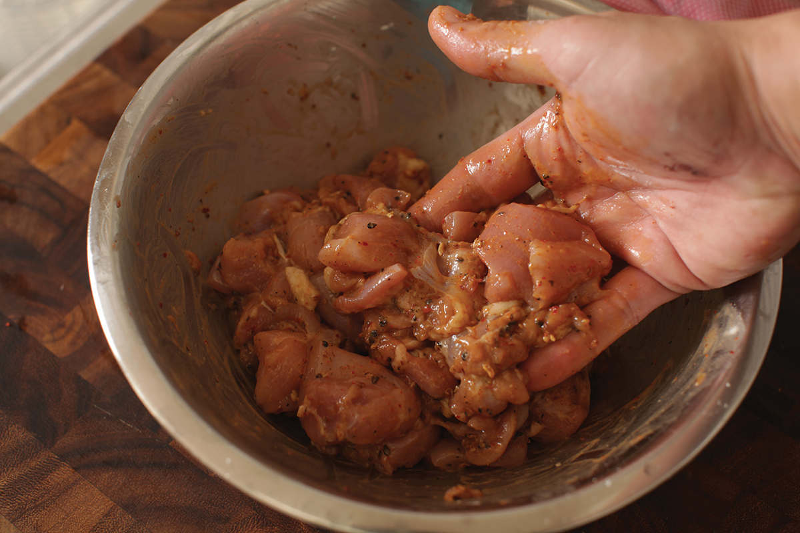
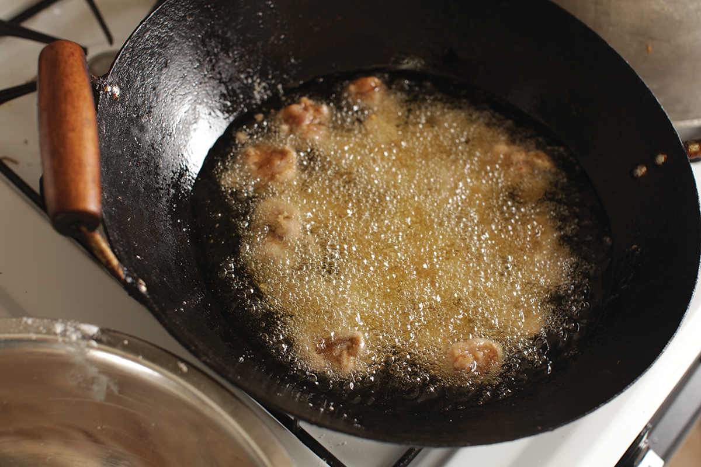
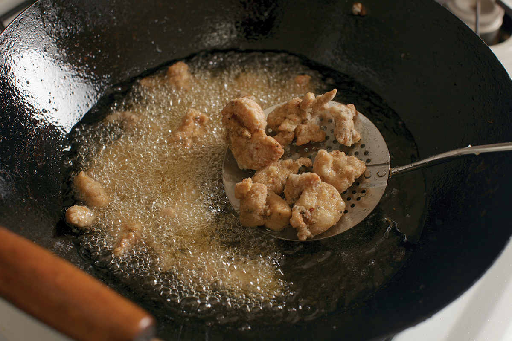
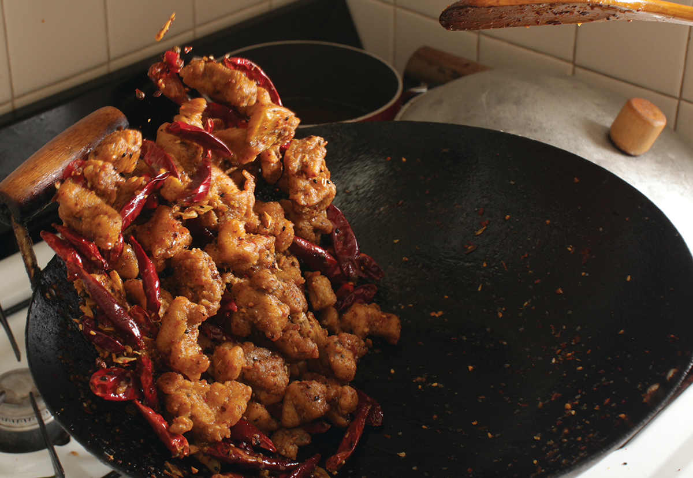

CHONGQING-STYLE DRY-FRIED CHICKEN
“La zi ji,” I said, timidly.
A confused stare.
“La ZI ji?”
More confusion.
“LA ZI JI.”
A sudden burst of recognition. “Ah, la zi ji!” exclaimed the host at the hostel Adri and I were staying at in Chongqing.
That’s exactly what I said! I couldn’t help thinking to myself. Apparently my inflection confused our host, who was trying her earnest best to help us out. She grabbed a map and drew a circle around a building, indicating which restaurant I should go to. I’d have to repeat the same exchange twice more—once with the host of the restaurant and once with the server—before I finally got what I was after: dry-fried chicken tossed in a giant pile of dried chiles and Sichuan peppercorns.
The dish I was served was immediately familiar to me: golden bits of fried chicken nestled into an overwhelmingly large pile of dried chiles whose aroma mingled with the piney, citrusy scent of Sichuan peppercorns. The tastes were also familiar: crispy, slightly chewy bites of chicken whose flavor was intensified through dry frying, a mouth-numbing quantity of Sichuan peppercorn, and a chile heat that, while not overwhelming, certainly built up as I powered through the plate.
The main difference in the version I had in Chongqing versus the majority of the versions I’ve had in the United States was the presence of bones. In the Sichuan original, the chicken is chopped up bones and all, and as a diner you’re expected to suck the bits of meat and marrow off them in your mouth, spitting out the little shards onto a plate as you eat. I’ve had it this way a handful of times in the United States, but I’ve got to admit, it’s a whole lot more work in a dish that already has you picking through piles of peppers in search of juicy nuggets. In the U.S., the chicken is often fried with a very light batter or dredging, which I usually do as well.
Once you get over the barrier of deep frying (and you should be over that barrier by now), it’s a surprisingly easy dish to make at home. Some recipes recommend frying the chicken once before stir-frying it, but I find that, as is nearly always the case with fried foods, a double-fry with a rest in between produces better results.
Why is this? The trouble with an extended single fry is that by the time the exterior is perfectly crispy, the chicken on the interior is liable to overcook significantly, leading to dry, chewy bites. By frying once, allowing the chicken to rest, then frying again, you can drive more moisture off the exterior, while still ensuring that the chicken in the center doesn’t ever get so hot that it dries out. The result is chicken with a crisper exterior and juicier center.
The only difficulty you may find is in procuring the right ingredients. The dish relies on a mix of chiles—er jing tiao and chao tian jiao at the very least, with the addition of deng long jiao (Sichuan lantern chiles) if you want the most complex combination of aroma and heat. Green Sichuan peppercorns, with their more intense numbing factor, are also preferable to red in this dish. You can find most of these ingredients online or at a very well-stocked Chinese supermarket, but even if you’re just using árbol chiles and red Sichuan peppercorn, you’re in for a numbing-good time.
|
Yield Serves 4 |
Active Time 15 minutes Total Time 40 minutes |
For more information on dried Sichuan chiles, see here. Note that when eating this dish, the chiles are not meant to be eaten; they are there for aroma and visual appeal. The strained oil can be cooled, then stored in a sealed container in the fridge for the next time you deep-fry.
INGREDIENTS
For the Dry-Fried Chicken:
1 pound (450 g) boneless, skinless chicken thigh, cut into ½-inch chunks
2 teaspoons (10 ml) light soy sauce or shoyu
2 teaspoons (10 ml) Shaoxing wine
2 teaspoons (8 g) kosher salt
1 large egg
1 tablespoon cornstarch or potato starch
2 quarts (2 l) peanut, rice bran, or other neutral oil
For the Stir-Fry:
2 tablespoons (15 g) minced garlic (about 6 medium cloves)
2 tablespoons (15 g) minced fresh ginger (about ¾-inch segment)
2 scallions, thinly sliced
1½ ounces (45 g/about 1 cup) dried er jing tiao chiles, cut into 1-inch pieces (see Notes)
1½ ounces (45 g/about 1 cup) dried chao tian jiao chiles, cut into 1-inch pieces (see Notes)
1 tablespoon (8 g) Sichuan or Korean chile flakes
2 tablespoons (about ½ ounce/20 g) green or red Sichuan peppercorns
1 teaspoon (4 g) sugar
¼ cup (40 g) roasted peanuts or Fried Peanuts (here)
2 tablespoons (15 g) toasted sesame seeds
DIRECTIONS
1 For the Chicken: Combine the chicken, soy sauce, Shaoxing wine, salt, egg, and starch in a medium bowl. Massage with your hands until the chicken is sticky and thoroughly coated in the starch mixture. Set aside to marinate for at least 15 minutes and up to 1 hour.
2 In a wok, heat the oil to 350°F (175°C). Add the chicken and cook, agitating it to separate the pieces and adjusting the heat to maintain an oil temperature of 300° to 325°F (150° to 160°C), until the chicken is pale golden brown and starting to crisp up around the edges, about 1 minute. Remove the chicken with a spider and transfer to a rimmed baking sheet. Allow the chicken to cool for 5 minutes.
3 For the Stir-Fry: Heat the oil in the wok to 400°F (190°C). With the wok set over high heat, add the chicken and cook, agitating and stirring it until the pieces are crispy and deep golden brown, about 45 seconds. Remove the chicken with a spider and return it to the rimmed baking sheet. Carefully pour the hot oil out of the wok through a fine-mesh strainer set in a heatproof container (such as a large saucepan).
4 Wipe out the wok and return it to high heat until smoking. Reduce the heat to medium, then add 3 tablespoons (45 ml) of the strained oil and swirl to coat. Add the garlic, ginger, scallions, dried chiles, chile flakes, and Sichuan peppercorns. Stir-fry until fragrant, about 30 seconds. Return the chicken to the wok along with the sugar, peanuts, and sesame seeds and stir-fry for an additional 30 seconds. Transfer to a serving platter and serve immediately.



